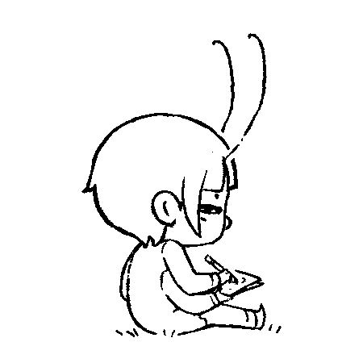

Varvara is a computer system running on Uxn.
Varvara is a specification for devices communicating with the Uxn CPU intended to run little audio and visual programs. To see a list of compatible software, see roms, and the community projects. If you are implementing your own Varvara emulator, you can find a series of roms to test your devices implementations here.
- Devices are external systems connected to the Uxn CPU, such as the screen, the mouse and the keyboard. Each device has 16 bytes of addressable memory in the device page, which are called ports.
- Ports are addresses in the device page, addressable with a single byte. Some ports hold either the high or low bytes of a short, and will be presented below as a single port indicated like vector*.
- Vectors are ports holding an address in memory to evaluate when a device event is triggered, such as when the mouse is moved, or a key is pressed. Vector ports will be presented below with a colored background.
- Banks are additional memory outside of addressable range accessible via the System/expansion port. Emulators are recommended to support 16 banks when possible, each bank contains 65536 bytes.
| Varvara | |||
|---|---|---|---|
| 00 | system | 80 | controller |
| 10 | console | 90 | mouse |
| 20 | screen | a0 | file |
| 30 | audio | b0 | |
| 40 | c0 | datetime | |
| 50 | d0 | Reserved | |
| 60 | e0 | ||
| 70 | f0 | ||
The two reserved devices can be used for implementation specific features that do not need to be part of the specs, or other Uxn/Varvara instances.
System Device 0x0000 0xff08
| system | 00 | Unused* | 08 | red* |
|---|---|---|---|---|
| 01 | 09 | |||
| 02 | expansion* | 0a | green* | |
| 03 | 0b | |||
| 04 | wst | 0c | blue* | |
| 05 | rst | 0d | ||
| 06 | metadata* | 0e | debug | |
| 07 | 0f | state |
|00 @System &vector $2 &expansion $2 &wst $1 &rst $1 &metadata $2 &r $2 &g $2 &b $2 &debug $1 &state $1
The System/expansion* port expects an address to an operation, it allows basic memory management for roms that must keep information outside of the addressable range, or cache the content of a file in order to seek through the data.
| name | operation | fields | |||||
|---|---|---|---|---|---|---|---|
| fill | 00 | length* | bank* | addr* | value | ||
| Fill a length of memory with a value, starting at address. | |||||||
| cpyl | 01 | length* | src bank* | src addr* | dst bank* | dst addr* | |
| Copy memory starting by the first byte. | |||||||
| cpyr | 02 | length* | src bank* | src addr* | dst bank* | dst addr* | |
| Copy memory starting by the last byte. | |||||||
@on-reset ( -> ) ;cmd .System/expansion DEO2 ;dst print-str BRK @cmd [ 01 000b 0000 =src 0000 =dst ] @src "Hello 20 "World $1 @dst $c
Reading, and writing, to the System/wst and System/rst ports will get, or set, a byte value as the working and return stack indexes. Note that reading the value in the wst and rst ports will include the resulting stack index byte, so an empty stack will return 01.
The System/metadata* port notifies the emulator that metadata about the rom is present at the address specified. The emulator can choose to utilize this information or to ignore it.
@on-reset ( -> ) ;meta .System/metadata DEO2 BRK @meta 00 "Nasu 0a "A 20 "Sprite 20 "Editor 0a "By 20 "Hundred 20 "Rabbits 0a "Jan 20 "8, 20 "2023 $2
| color0 | color1 | color2 | color3 |
|---|---|---|---|
#fff |
#000 |
#7db |
#f62 |
This device is holding 3 shorts to be used for application customization, for simplicity we call them the System/red*, System/green* and System/blue* shorts. These colors are typically used by the screen device to form four application colors.
@on-reset ( -> )
set-theme
BRK
@set-theme ( -- )
#f07f .System/r DEO2
#f0d6 .System/g DEO2
#f0b2 .System/b DEO2
JMP2r
Sending a non-null byte to the System/debug port will print the content of the stacks or pause the evaluation if the emulator includes a step-debugger. The recommended output for the #01 debug value, with a working stack containing 3 items, is as follow:
WST 00 00 00 00 00|12 34 56 < RST 00 00 00 00 00 00 00 00|<
Sending a non-null byte to the System/state port will terminate the
application, on systems that can handle exit codes, the error code is the
0x7f portion of the byte. So, 0x01 terminates the
program with an error, and 0x80 terminates the program
succesfully.
@on-reset ( -> ) ( exit code 0, success ) #80 .System/state DEO BRK
- v2: Added wst/rst ports to read and write to the stack index.
- v3: Added fill and cpyr expansion commands.
Console Device 0x0000 0x0300
| console | 10 | vector* | 18 | write |
|---|---|---|---|---|
| 11 | 19 | error | ||
| 12 | read | 1a | -- | |
| 13 | -- | 1b | -- | |
| 14 | -- | 1c | addr* | |
| 15 | -- | 1d | ||
| 16 | -- | 1e | mode | |
| 17 | type | 1f | exec |
|10 @Console &vector $2 &read $5 &type $1 &write $1 &error $1
The Console/vector* is evaluated when a byte is received. The Console/type port holds one of 5 known types: no-queue(0), stdin(1), argument(2), argument-spacer(3), argument-end(4). During the reset vector, a program should be able to query the type port and get a null byte when there is no arguments to be expected, a 1 when arguments are present.
uxncli file.rom arg1 arg2
^ ^^ ^
2 32 4
The Console/read port is used to listen to incoming bytes during a Console vector event.
@on-reset ( -> ) ;on-console .Console/vector DEO2 BRK @on-console ( -> ) .Console/read DEI .Console/write DEO #20 .Console/write DEO BRK
The Console/write port is used to send data through the console. For example, a program sending the text "Hello", will trigger the console's port 5 times; once for each character.
@on-reset ( -> ) ;text &while ( -- ) LDAk .Console/write DEO INC2 LDAk ?&while POP2 BRK @text "Hello $1
Screen Device 0x003c 0xc0028
| screen | 20 | vector* | 28 | x* |
|---|---|---|---|---|
| 21 | 29 | |||
| 22 | width* | 2a | y* | |
| 23 | 2b | |||
| 24 | height* | 2c | addr* | |
| 25 | 2d | |||
| 26 | auto | 2e | pixel | |
| 27 | -- | 2f | sprite |
|20 @Screen &vector $2 &width $2 &height $2 &auto $2 &x $2 &y $2 &addr $2 &pixel $1 &sprite $1
The Screen/vector* is evaluated 60 times per second. The screen device is capable of displaying graphics in any four colors, which are defined by the system device. The screen is made of two selfstanding layers, the foreground layer treats color0 as transparent.
@on-reset ( -> ) ;on-screen .Screen/vector DEO2 BRK @on-screen ( -> ) [ LIT &frame $1 ] INCk ,&frame STR #01 AND ?&>skip ( 30 times per second ) &>skip BRK
The Screen/width* and Screen/height* ports can be set to resize the screen for systems that supports it, but reading from these ports should ALWAYS return the actual sizes, as programs make use of the screen sizes to position responsive graphics on the screen.
@on-reset ( -> ) set-theme .Screen/width DEI2 #01 SFT2 .Screen/x DEO2 .Screen/height DEI2 #01 SFT2 .Screen/y DEO2 #01 .Screen/pixel DEO ( paint a black pixel, on background ) #43 .Screen/pixel DEO ( paint a red pixel, on foreground ) #93 .Screen/pixel DEO ( fill a red rectangle bottom-left, on background ) #e2 .Screen/pixel DEO ( fill a cyan rectangle top-right, on foreground ) BRK
The Screen/pixel port defines the pixel or fill mode, layer to draw on, optional horizontal/vertical flipping of the quadrant to fill, and which of the four colors to use. When the fill bit is active, the operation will fill a portion of the screen starting at the x,y position until the edges of the screen. The default quadrant is bottom-right, flipping the x bit will fill the buttom-left quadrant, and so on.
M L Y X 3 2 1 0
Fill ----+ | | | | | | +---- Color bit 0
Layer ------+ | | | | +------ Color bit 1
Flip Y --------+ | | +-------- Unused
Flip X ----------+ +---------- Unused
The Screen/sprite port defines the 1-bit or 2-bit mode, layer to draw on, optional horizontal and vertical flipping of the sprite, and the colors to use.
M L Y X 3 2 1 0
2bpp ----+ | | | | | | +---- Color bit 0
Layer ------+ | | | | +------ Color bit 1
Flip Y --------+ | | +-------- Color bit 2
Flip X ----------+ +---------- Color bit 3
The 8x8 sprite data to draw is specified by writing its location in memory to the Screen/addr* port.
@on-reset ( -> ) set-theme #0020 .Screen/x DEO2 #0040 .Screen/y DEO2 ;sprite-icn .Screen/addr DEO2 #01 .Screen/sprite DEO BRK @sprite-icn 00 66 ff ff ff 7e 3c 18 ( . . . . . . . . 00 . # # . . # # . 66 # # # # # # # # ff # # # # # # # # ff # # # # # # # # ff . # # # # # # . 7e . . # # # # . . 3c . . . # # . . . 18 )
| 0 | 4 | 8 | c | ||||
|---|---|---|---|---|---|---|---|
| 1 | 5 | 9 | d | ||||
| 2 | 6 | a | e | ||||
| 3 | 7 | b | f |
The color nibble defines which color is drawn for each pixel of a sprite. The following table presents all possible combinations, assuming a sprite has a background of value 0 and three concentric circles of values 1, 2, and 3 (counting from the outside). For 1-bit sprites, only values 0 and 1 are applicable.
c = !ch ? (color % 5 ? color >> 2 : 0) : color % 4 + ch == 1 ? 0 : (ch - 2 + (color & 3)) % 3 + 1;
blending[4][16] = {
{0, 0, 0, 0, 1, 0, 1, 1, 2, 2, 0, 2, 3, 3, 3, 0},
{0, 1, 2, 3, 0, 1, 2, 3, 0, 1, 2, 3, 0, 1, 2, 3},
{1, 2, 3, 1, 1, 2, 3, 1, 1, 2, 3, 1, 1, 2, 3, 1},
{2, 3, 1, 2, 2, 3, 1, 2, 2, 3, 1, 2, 2, 3, 1, 2}};
The Screen/auto port automates the incrementation of the position and sprite address whenever a drawing command is sent, so the program does not need to manually move to the next sprite, or the next position.
3 2 1 0 * A Y X
Length bit 3 ----+ | | | | | +---- Auto X
Length bit 2 ------+ | | | +------ Auto Y
Length bit 1 --------+ | +-------- Auto Addr
Length bit 0 ----------+
The length nibble controls the number of extra sprites that will be drawn in addition to the first, each time the sprite port is written to. When set to 0, only a single sprite will be drawn. As many as 16 sprites can be drawn at once with a value of 15.
The auto-x and auto-y bits control the increment of the x and y ports respectively, as well as the layout of the extra sprites drawn when the length nibble is not null. The extra sprites are drawn as columns moving rightward for auto-x, and rows moving downward for auto-y. If the flip bits of the sprite byte are set, the directions are reversed. If the auto-addr bit is set, the address port will be incremented for each sprite drawn by increments of 8 for 1-bit, and by increments of 16 for 2-bit.
@paint-sprite ( x* y* -- ) .Screen/y DEO2 ( set y position ) .Screen/x DEO2 ( set x position ) #16 .Screen/auto DEO ( set length 2 with auto y and addr ) ;23x-icns .Screen/addr DEO2 ( set addr ) #01 .Screen/sprite DEOk DEOk DEO ( draw 3 rows of 1-bit sprites ) JMP2r @23x-icns ( 0 ) ( 1 ) ( 0 ) 0010 2847 2810 0001 0000 00e0 2040 8000 ( 1 ) 0204 080f 0000 0001 0000 00e0 2040 8000 ( 2 ) 0204 080f 0000 0000 0010 28c4 2810 0000
Audio Device 0x0014 0x8000
| audio | 30 | vector* | 38 | adsr* |
|---|---|---|---|---|
| 31 | 39 | |||
| 32 | position* | 3a | length* | |
| 33 | 3b | |||
| 34 | output | 3c | addr* | |
| 35 | -- | 3d | ||
| 36 | -- | 3e | volume | |
| 37 | -- | 3f | pitch |
|30 @Audio0 &vector $2 &position $2 &output $1 &pad $3 &adsr $2 &length $2 &addr $2 &volume $1 &pitch $1 |40 @Audio1 &vector $2 &position $2 &output $1 &pad $3 &adsr $2 &length $2 &addr $2 &volume $1 &pitch $1 |50 @Audio2 &vector $2 &position $2 &output $1 &pad $3 &adsr $2 &length $2 &addr $2 &volume $1 &pitch $1 |60 @Audio3 &vector $2 &position $2 &output $1 &pad $3 &adsr $2 &length $2 &addr $2 &volume $1 &pitch $1
The Audio/vector* is evaluated when a note ends. All samples used by the audio devices are unsigned 8-bit mono.
When a byte is written to the Audio/pitch port, any sample that is currently playing will be replaced with the sample defined by all the values set in the device, it starts playing an audio sample from memory located at Audio/addr* with length of Audio/length*. It loops the sample until it reaches the end of the envelope defined by Audio/adsr*. Several fields contain more than one component:
| ADSR* | Pitch | Volume | ||||||
|---|---|---|---|---|---|---|---|---|
| Subfield | Attack | Decay | Sustain | Release | Loop | Note | Left | Right |
| Size (bits) | 4 | 4 | 4 | 4 | 1 | 7 | 4 | 4 |
Each of the ADSR components is measured in 15ths of a second, so writing #ffff to Audio/adsr* will play a note that lasts for exactly four seconds, with each section of the envelope lasting one second. If Audio/adsr* is #0000 then no envelope will be applied: this is most useful for longer samples that are set to play once by setting the most significant bit of Audio/pitch to 1.
The envelope varies the amplitude as follows: starting at 0%, rising to 100% over the Attack section, falling to 50% over the Decay section, remaining at 50% throughout the Sustain section and finally falling to 0% over the Release section. The envelope is linearly interpolated throughout each section.
@on-reset ( -> ) #0248 .Audio/adsr DEO2 #88 .Audio/volume DEO ;note-pcm .Audio/addr DEO2 #0010 .Audio/length DEO2 #30 .Audio/pitch DEO BRK @square-pcm ff ff ff ff ff ff ff ff 00 00 00 00 00 00 00 00
The two Audio/volume components balance how loudly the next sample will play in each ear. #ff sets maximum volume for both speakers. While the sample is playing, the Audio/output byte can be read to find the loudness of the envelope at that moment.
Controller Device 0x0000 0x0000
| controller | 80 | vector* | 88 | -- |
|---|---|---|---|---|
| 81 | 89 | -- | ||
| 82 | button | 8a | -- | |
| 83 | key | 8b | -- | |
| 84 | 8c | -- | ||
| 85 | P2 | 8d | -- | |
| 86 | P3 | 8e | -- | |
| 87 | P4 | 8f | -- |
|80 @Controller &vector $2 &button $1 &key $1
The Controller/vector* is evaluated when a button, is pressed or released, and when a key is pressed. The key port is set to zero after the vector is called.
0x01 | A Ctrl | 0x10 | Up |
0x02 | B Alt | 0x20 | Down |
0x04 | Select Shift | 0x40 | Left |
0x08 | Start Home | 0x80 | Right |
The Controller/button port works similarly to a NES controller, where there the state of each one of the 8 buttons is stored as a bit in a single byte.
@on-reset ( -> ) ;on-controller .Controller/vector DEO2 BRK @on-controller ( -> ) .Controller/button DEI DUP #20 AND ?on-dpad-down DUP #80 AND ?on-dpad-right POP BRK @on-dpad-down ( button -> ) @on-dpad-right ( button -> )
The Controller/key port holds the character data that is pressed during the vector event.
@on-controller ( -> ) .Controller/key DEI DUP ?on-key POP BRK @on-key ( key -> )
Would the need for multi-player games arise, the P2, P3 and P4 ports, will host button-type byte values received from the other controllers.
Mouse Device 0x0000 0x0000
| mouse | 90 | vector* | 98 | -- |
|---|---|---|---|---|
| 91 | 99 | -- | ||
| 92 | x* | 9a | scrollx* | |
| 93 | 9b | |||
| 94 | y* | 9c | scrolly* | |
| 95 | 9d | |||
| 96 | state | 9e | -- | |
| 97 | -- | 9f | -- |
|90 @Mouse &vector $2 &x $2 &y $2 &state $5 &scrolly &scrolly-hb $1 &scrolly-lb $1
The Mouse/vector* is evaluated when the mouse is moved and when a button is pressed or released.
@on-reset ( -> ) ;on-mouse .Mouse/vector DEO2 BRK @on-mouse ( -> ) .Mouse/state DEI ?&down BRK &down ( -> ) .Mouse/x DEI2 print-dec LIT ", .Console/write DEO .Mouse/y DEI2 print-dec #0a .Console/write DEO BRK
The Mouse/state port holds a byte in which each bit is a button state. The byte value of holding down the mouse1 button is 01, and holding down mouse1+mouse3 button is 05. The Mouse/scroll-x* and Mouse/scroll-y* values are signed shorts, normally ffff and 0001, for -1 and +1.
File Device 0x0000 0xa260
| file | a0 | vector* | a8 | name* |
|---|---|---|---|---|
| a1 | a9 | |||
| a2 | success* | aa | length* | |
| a3 | ab | |||
| a4 | stat* | ac | read* | |
| a5 | ad | |||
| a6 | delete | ae | write* | |
| a7 | append | af |
|a0 @File1 &vector $2 &success $2 &stat $2 &delete $1 &append $1 &name $2 &length $2 &read $2 &write $2 |b0 @File2 &vector $2 &success $2 &stat $2 &delete $1 &append $1 &name $2 &length $2 &read $2 &write $2
The File/vector* is normally unused, but is reserved for systems where a portable data format(disk, etc..) can be inserted. There is no specs for disk handling at this time.
When File/name* resolves to a file, writing the address to File/read* will read the file's data to the File/addr* in memory. File/success* will be less than File/length* if the file is shorter, and will be zero if the filename is invalid. If the file is longer, subsequent writes to File/read* will read the next chunk of data into the memory region, so it is possible to read the contents of very large files one chunk at a time.
@on-reset ( -> ) ;filename .File/name DEO2 #0010 .File/length DEO2 ;buffer .File/read DEO2 BRK @filename "in.txt $1 @buffer $10
When File/name* resolves to a directory, writing the address to File/read* will read the directory as if it were a text file listing each of the directory's contents. The listing has each file or directory on its own line, prefixed with the file size in four hexadecimal characters, a space, its name and a linebreak.
If the file is too big to fit in four ascii characters then ????
will be used instead; for directories, ---- takes the place of the
file size.
001a file.txt ???? large file.mp4 ---- directory/ !!!! missing file
The information of a file or directory can be obtained via the File/stat* port, the File/length* specifies the length of the buffer to write to, the data written will be in the same format as the ascii bytes above. A short length will return the lower nibbles of a file size, a higher length will allow the reading of larger file sizes. The length of the stat written will always fill the requested length, so a directory result will be dashes for the requested length.
@is-folder ( name* -- bool ) .File/name DEO2 #0001 .File/length DEO2 ;&b .File/stat DEO2 [ LIT2 &b "- ] EQU2 JMP2r
Writing files is performed by writing to File/write*. If File/append is set to 0x01, then the data in the memory region will be written after the end of the file, if it is 0x00 (the default) it will replace the contents of the file. If the file doesn't previously exist then it will be created and File/append makes no difference. File/success* will be set to File/length* if the write was successful, otherwise it will read as zero. As with reading files and directories, subsequent writes to File/write* will write more chunks of data to the file.
@on-reset ( -> ) ;filename .File/name DEO2 #0005 .File/length DEO2 ;data .File/write DEO2 BRK @filename "out.txt $1 @data "hello $1
Finally, to delete a file, write any value to the File/delete byte. Writing to File/name* closes the file/directory. The device may not access files outside of the working directory.
Datetime Device 0x07ff 0x0000
| datetime | c0 | year* | c8 | doty |
|---|---|---|---|---|
| c1 | c9 | |||
| c2 | month | ca | isdst | |
| c3 | day | cb | -- | |
| c4 | hour | cc | -- | |
| c5 | minute | cd | -- | |
| c6 | second | ce | -- | |
| c7 | dotw | cf | -- |
|c0 @DateTime &year $2 &month $1 &day $1 &hour $1 &minute $1 &second $1 &dotw $1 &doty $2 &isdst $1
The week, in the dotw port, begins on sunday.
@print-date-num ( -- ) .DateTime/year DEI2k print-dec [ LIT "- ] .Console/write DEO INC INC DEIk INC print-dec-pad [ LIT "- ] .Console/write DEO INC DEI !print-dec-pad
17P09— Varvara Specs One
incoming donsol roms left noodle nasu adelie oekaki nebu metadata metadata metadata oquonie potato shavian basic basic icn format chr format gly format ufx format tga format uxn uxn uxn uxn uxn uxntal syntax uxntal syntax uxntal types uxntal devices beetbug beetbug varvara computer uxn devlog now lie in it